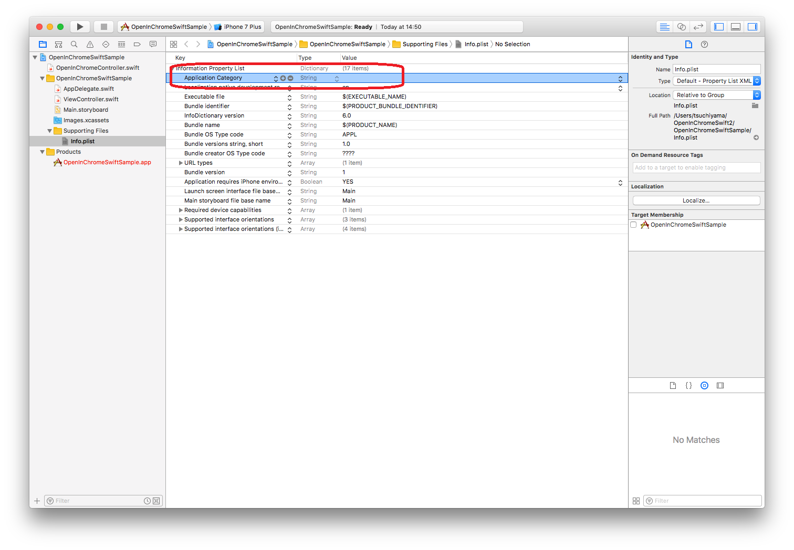
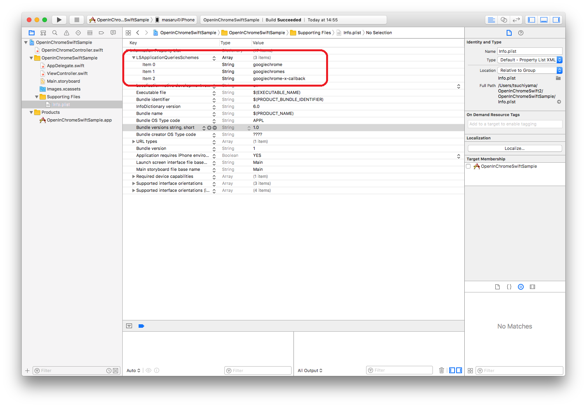

$Date: 2018-07-07 06:49:13 +0900 (2018/07/07 (土)) $
$Revision: 1347 $
swift 3 での OpenInChrome (OpenInChromeSwift)
OpenInChrome は ios アプリで Chrome を起動するクラスライブラリです。
OpenInChromeSwift (https://github.com/cezheng/OpenInChromeSwift) は
https://github.com/GoogleChrome/OpenInChrome を
Swift で書き直したものです。
それを
https://github.com/cezheng/OpenInChromeSwift を fork して
swift 3 対応したもの (https://github.com/m-tmatma/OpenInChromeSwift の swift3 ブランチ) です。
Pull Request
https://github.com/cezheng/OpenInChromeSwift/pull/1 で Pull Request を送っています。
利用するアプリケーション側の対応
info.plist の差分はこちら
- Xcode 8 で info.plist を開いて Add Row で任意の項目を追加する

- テキストエディタで info.plist を開いて追加した項目を LSApplicationQueriesSchemes に変更する
- Xcode 8 で LSApplicationQueriesSchemes のタイプを Arrayに変更する
- LSApplicationQueriesSchemes のところで Add Row を選択して子項目を追加する
- 追加した子項目の値を googlechrome に設定する
- + ボタンを押して項目を追加する。
- 追加した子項目の値を googlechromes に設定する
- + ボタンを押して項目を追加する。
- 追加した子項目の値を googlechrome-x-callback に設定する

利用するアプリケーションのコード
import UIKit
class ViewController: UIViewController {
@IBOutlet weak var label: UILabel!
override func viewDidLoad() {
super.viewDidLoad()
// Do any additional setup after loading the view, typically from a nib.
if OpenInChromeController.sharedInstance.isChromeInstalled() {
self.label.text = "Installed"
}
else {
self.label.text = "Not Installed"
}
}
override func didReceiveMemoryWarning() {
super.didReceiveMemoryWarning()
// Dispose of any resources that can be recreated.
}
@IBAction func Open(_ sender: Any) {
let url = URL(string: "http://www.google.co.jp")
let callbackURL = URL(string: "opcsample://")
if OpenInChromeController.sharedInstance.openInChrome(url!, callbackURL: callbackURL, createNewTab: true) {
print("success")
}
else {
print("fail")
}
}
}